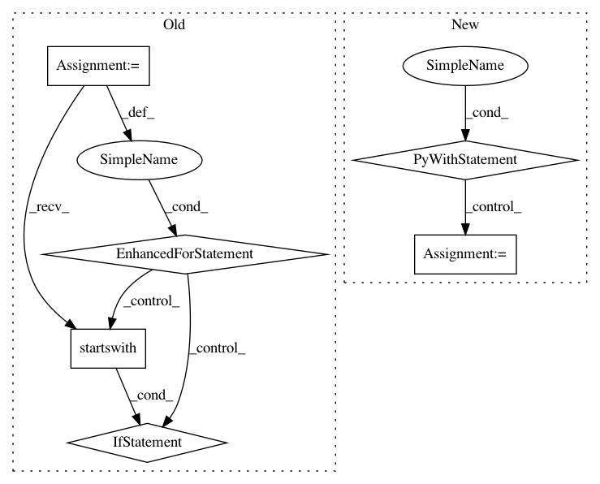

d3babe1252d05f07e58a6602b47e1a09bbd56af5,networkml/parsers/pcap/reader.py,,packetizer,#Any#,67
Before Change
)
packet_dict = OrderedDict()
buf = ""
for line in proc.stdout:
line = line.decode("utf-8")
if not line.startswith(" "):
continue
if line.startswith(" ,"):
continue
buf += line
if line.startswith(" }"):
parse_buf(buf)
buf = ""
return packet_dict
def sessionizer(path, duration=None, threshold_time=None):
After Change
"""
packet_dict = OrderedDict()
with pyshark.FileCapture(path, use_json=True, include_raw=True,
custom_parameters={"-o": "tcp.desegment_tcp_streams:false"}) as cap:
for packet in cap:
data = packet.get_raw_packet()
head = parse_packet_head(packet)
if head is not None:
packet_dict[head] = binascii.hexlify(data).decode("utf-8")
return packet_dict
def sessionizer(path, duration=None, threshold_time=None):
In pattern: SUPERPATTERN
Frequency: 3
Non-data size: 6
Instances
Project Name: CyberReboot/NetworkML
Commit Name: d3babe1252d05f07e58a6602b47e1a09bbd56af5
Time: 2019-12-10
Author: josh@vandervecken.com
File Name: networkml/parsers/pcap/reader.py
Class Name:
Method Name: packetizer
Project Name: automl/auto-sklearn
Commit Name: 2bffb578491e086ffb39d2740df3c28552ff38d7
Time: 2016-05-10
Author: feurerm@informatik.uni-freiburg.de
File Name: autosklearn/evaluation/abstract_evaluator.py
Class Name: AbstractEvaluator
Method Name: _fit_and_suppress_warnings
Project Name: descarteslabs/descarteslabs-python
Commit Name: e6211ba0f59e0bd6c71459e9dfbc043d13eb24a8
Time: 2020-12-08
Author: gabe@descarteslabs.com
File Name: descarteslabs/workflows/interactive/layer.py
Class Name: WorkflowsLayer
Method Name: _update_logger